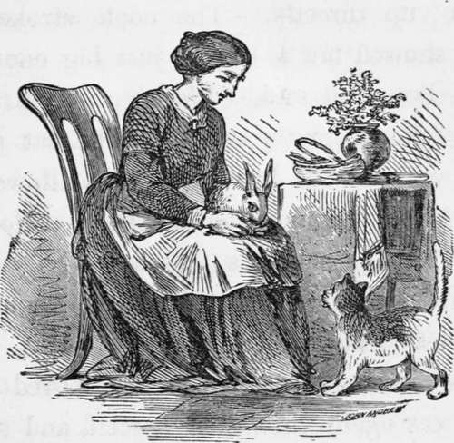

True Stories About Dogs & Cats. Part 4
Description
This section is from the book "True Stories About Dogs & Cats", by Eliza Lee Cabot Follen. Also available from Amazon: True stories about dogs & cats.
True Stories About Dogs & Cats. Part 4
We take it for granted that cats have no love in them, and so we never act towards them as if they had any; now I believe they have, on the whole, pretty good hearts, and, if they were treated with justice and kindness, would be far more respectable members of society than they are. To show this I will mention some facts of which I have heard, and, some which I have witnessed.
In the first place, the cat is accused of never caring for the inhabitants of a house, but only for the house itself. Now I knew an affectionate cat who manifested much disturbance when the family were making preparations for moving; at last, all was gone from the house except herself and the cook. The cook, in order to make sure that the cat should not escape from the carriage on the way, put her into a cage and fastened her in.
When they arrived, the cat walked quietly out of her cage, looked at her old friend the cook, went into another room where she met another friend, and began forthwith to purr her satisfaction.
Two years afterwards, this family moved again. As soon as the cat saw the preparations making for moving, she showed great uneasiness, and went down into the cellar, where she remained during all the confusion.
When all else was gone, the cook went to the cellar stairs, and called her. The cat came up directly. The cook stroked her, and showed her a basket just big enough to hold her, and said, " Get in, get in, pussy, and take a pretty ride!" The cat got in, and, without the least resistance, allowed herself to be shut into the basket by a cloth tied over it. As soon as she saw the different members of the family in the new house, she manifested her contentment.
In six months the family moved again. The cat again submitted herself, and showed her preference to her friends over their house.
A cat has been known to nurse and bring up a rat with her own kittens. I once took a little rabbit who was starving to death from the neglect of its own mother, and placed it before the same cat who preferred the people to the house. She had just come from nursing her kittens, and when she saw the little trembling rabbit before her, her first thought was, evidently to make a good meal of it. I took up the little thing and caressed it, and then put it down again. She now approached it in a motherly way, and looked at it; its ears seemed evidently to puzzle her. After a while, she tried to take it up as she did her kittens, but saw she could not safely ; then she went to her nest and mewed, and then came to me and rubbed herself against me; and then went to the rabbit and licked it tenderly; I now ventured to put the rabbit in with her kittens, and she nursed, and took the best care of it.
A friend of mine who killed a squirrel not knowing that she had young ones, took all the little squirrels, brought them into the house, and put them before his pet cat who had lost all her kittens but one. Pussy looked at them for a while; probably her cattish nature thought a little of eating them; but her better nature soon prevailed, for she took them, one after another, and carried them all to her nest, and proved a faithful nursing mother to them, and ere long there was no part of the house in which the old cat and her roguish adopted children were not to be found.
What will not cats submit to from a loving child ? I have seen a child lie down with a cat for its pillow, and the cat merely move herself a little, so as to bear the weight as easily as possible.
A cat can be taught to stand and walk on her hind legs, which seems at first very disagreeable to her.
I remember, when I was a child, seeing a Maltese cat come in every morning and wait till my father had finished his breakfast, then, at a certain signal, rise up on her hind legs, and beg for her breakfast, and take just what was given her with the utmost propriety, asking for nothing more.
I will tell you a well-authenticated anecdote which I read the other day. A cat had been brought up in close friendship with a bird. Now birds, you know, are the favorite food of cats. One day she was seen suddenly to seize and hold in her claws her feathered companion who happened to be out of the cage.
The first thought of those who saw her was that, at last, her tiger nature had come out, and that she was going to make a meal of her little trusting friend ; but all the cat did was to hold the trembling bird still, and, on looking around the room, it was discovered that another cat had come in, and that catching the bird was only the means the friendly cat used to keep it safe till the intruder should leave the room. As soon as the other cat was gone, she let go the bird, who it was found was not in the least hurt.
A cat who had been petted and always kindly treated by a family of children, was present one day when the mother thought it necessary to strike one of them for some bad action; the cat flew violently at the mother and tried to scratch her, and from that time she never could strike one of the children with impunity in the presence of their faithful, loving friend.
A friend related to me that they had a cat in her father's family who was a great favorite, and who was particularly fond of the baby ; that one day this child was very fretful, and sat for a long time on the floor crying, and that nothing would pacify her.
The cat was by her side on the floor, and finding herself not noticed, and perhaps wearied at the noise, she suddenly stood up on her hind legs and boxed the child's ears in exactly the same way in which she was in the habit of boxing her kitten's.
It seems that this cat was not so amiable as the other, and did not object to giving a box on the ear to a naughty child.
I have another story from a good authority which is still more in favor of poor pussy, and puts her upon a par with the most faithful dog.
Continue to:
- prev: True Stories About Dogs & Cats. Part 3
- Table of Contents
- next: True Stories About Dogs & Cats. Part 5